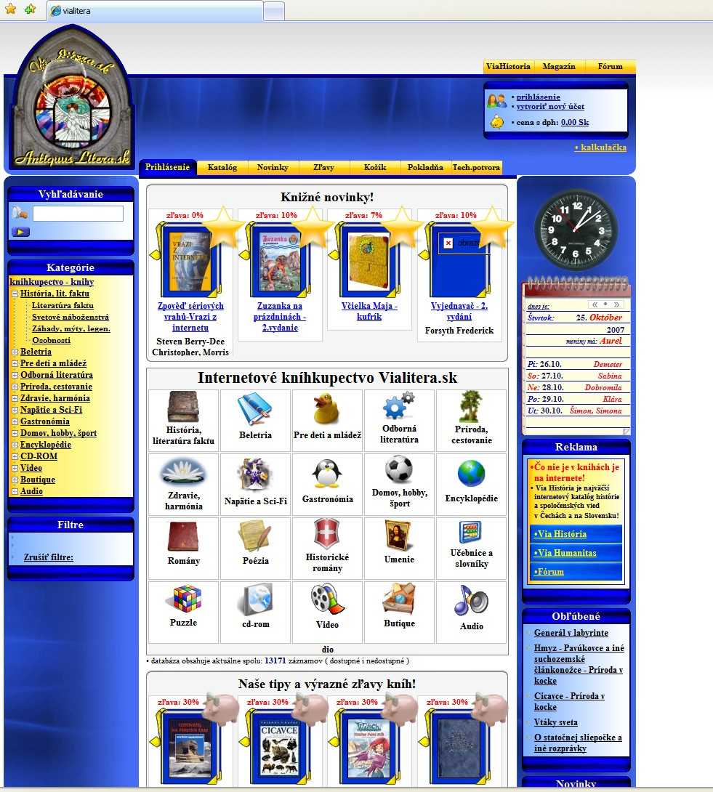
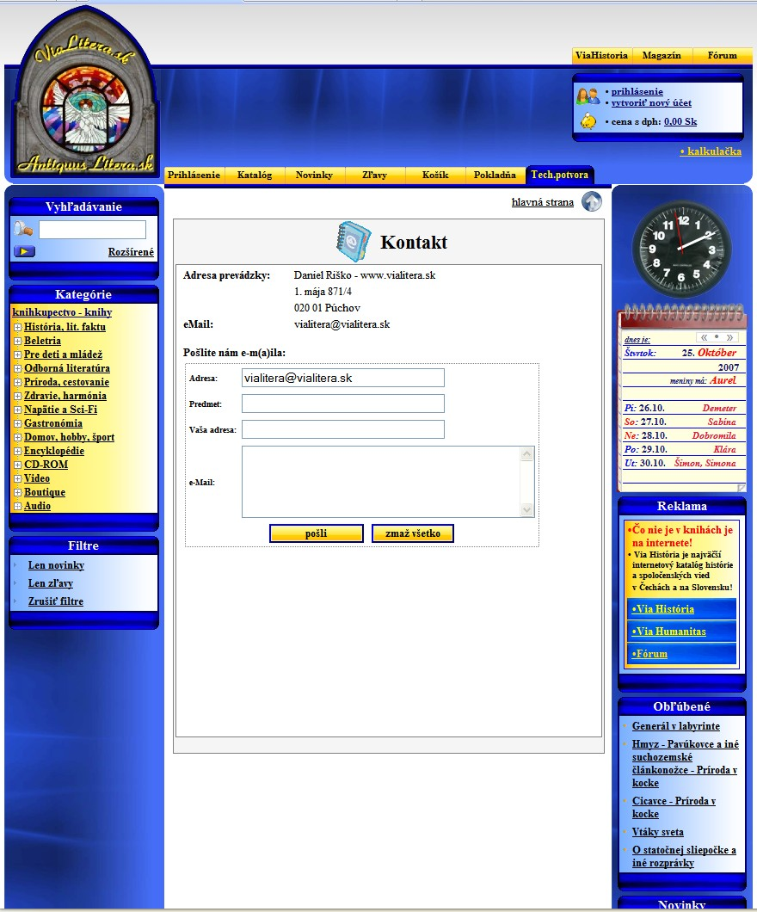

↑ o úroveò vvyššie
Prezentácia: kníhkupectvo uívate¾ská èas
1. 
2.
3.
4.
5.
6.
7.
8. 
• internetové kníhkupectvo,
Je postavené na platforme Zoner InShop3, avšak prešlo rozsiahlymi hlavne grafickımi úpravami,
vaèšina šablón je tie funkène takmer úplne prestavaná pomocou skriptovacieho jazyka platformy.
• vıznamné je tie SEO stránok, keï i napriek silnej konkurencii medzi kníhkupectvami google umiestòuje
stránky pre k¾úèové slová: "kníhkupectvo", "internetové kníhkupectvo" na 3. a 6. pozíciu dlhodobo.
• ( InShop3(ASP), HTML, Javascript, CSS )
• ukáka: ruène optimalizované (SEO) úvodné stránky kategórii
• vıpis katalógu
• detail knihy
• šablóna "košík"
• ukáka formulárov
•